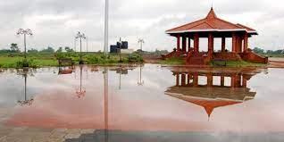

MALAPPURAM
Malappuram was a military and administrative headquarters from ancient times, though several of the ancient history of the city is hardly seen recorded. However, there are some pre-historic relics, particularly Rock-cut caves found in some parts of the city like Oorakam, Melmuri, Ponmala, Vengara etc. manifesting the inhabitancy.[20] Locality named like Valiyangadi, Kootilangadi, Pallipuram etc. points to the Jain - Buddhist history of Malappuram.